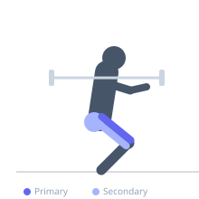

Exercise guide / Barbell Back Squat
Barbell Back Squat
The barbell back squat is the foundational lower body compound movement, in which a barbell rests on the upper back while the lifter descends into a full squat and returns to standing. It is unparalleled for developing quadriceps, glute, and hamstring strength and size, and also demands significant erector spinae and core stability.
Primary muscles
rectus femoris
vastus lateralis
vastus medialis
vastus intermedius
Secondary muscles
gluteus maximus
biceps femoris long head
semitendinosus
adductor magnus
Stabilizers
erector spinae
transverse abdominis
Equipment
Standard Barbell
Power Rack (Squat Cage)


Starting position
- Stand with feet shoulder-width apart or slightly wider, toes pointing outward 15–30 degrees. The barbell rests on the upper traps (high-bar) or rear delts (low-bar). Unrack from a rack with arms firmly bracing the bar.
Setup
- Set the safety bars just below your squat depth in the rack. Position the bar on your upper back and grip firmly. Take a step back with both feet into your squat stance.
Steps
- Take a deep breath and brace the core hard with an intra-abdominal pressure brace.
- Initiate the descent by pushing the knees outward in the direction of the toes while hinging the hips back and down.
- Descend until the hips are at or below the top of the knees (parallel or deeper).
- Drive through the whole foot — especially the mid-foot and heel — to stand back up.
- Lock out the hips and knees fully at the top without hyperextending.
Coaching cues
- Spread the floor with your feet — push out with knees
- Big chest — keep the torso as upright as your bar position allows
- Drive through the floor, not just the toes
Breathing
- Breathe in and brace before descent. Hold the brace through the bottom. Exhale at the top.
Range of motion
- Hip crease below the top of the knee at minimum (parallel). Greater depth is generally better for glute and hamstring development when mobility allows.
Tempo
- 3-1-1-0
Common mistakes
- Knees caving inward (valgus collapse) — cue knees out
- Excessive forward lean from poor ankle mobility or bar position
- Rounding the lower back at the bottom of the squat
- Not reaching parallel depth
Safety
- Always use safety bars in a rack when squatting without a spotter
- Learn the goblet squat and bodyweight squat before loading a barbell
Training
- strength: 1–5 reps
- hypertrophy: 6–12 reps
- endurance: 15–20 reps
- strength: 3–6 sets
- hypertrophy: 3–5 sets
- endurance: 2–4 sets
- Rest: {'strength': 240, 'hypertrophy': 120, 'endurance': 60}